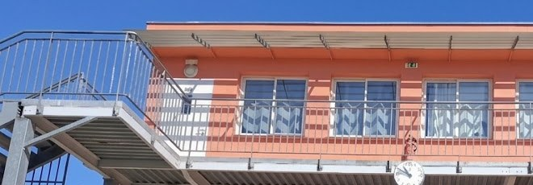

Collège Chambertin · 9 avenue de la Marne · Asnières-sur-Seine
Le Collège accueille les élèves de la 6e à la 3e.
Établissement privé laïque sous contrat d’association avec l’État, il dispense les programmes nationaux, prépare au diplôme national du brevet et accompagne l’entrée au lycée.
Commencer une demande d’admission

Les quatre années du Collège
6e — Entrer dans un nouveau cadre
La sixième donne la priorité à l’adaptation au Collège, à l’acquisition des méthodes de travail et à la consolidation des fondamentaux.
5e — Élargir et structurer
Les enseignements s’approfondissent, les langues se développent et l’élève apprend à organiser un travail plus autonome.
4e — Renforcer les raisonnements
Les disciplines gagnent en complexité et les élèves apprennent à soutenir un effort régulier dans la durée.
3e — Préparer le brevet et l’orientation
La dernière année articule consolidation des connaissances, préparation au DNB et réflexion sur l’entrée au lycée.
Une structure à taille humaine
Le Collège accueille environ 220 élèves, répartis en deux classes par niveau, de la 6e à la 3e, avec un effectif maximal de 30 élèves par classe.
Cette dimension favorise une connaissance fine des élèves, la réactivité face aux difficultés et la cohérence du cadre éducatif. Les élèves sont accueillis chaque matin et quittent l’établissement sous la présence des équipes de vie scolaire et de direction.
Une organisation structurante
Les élèves disposent de leur salle de classe et les professeurs changent de local aux intercours. Les journées suivent des horaires réguliers et l’ensemble des élèves déjeune au Collège.
Les études, les ateliers méridiens, les accompagnements et les projets prolongent le temps d’enseignement sans le confondre avec une simple garde.
Tous les élèves suivent l’anglais et le chinois dès la sixième. À partir de la cinquième, l’allemand ou l’espagnol s’ajoutent et chacun choisit le parcours qu’il mènera jusqu’en troisième, entre la poursuite du chinois et le latin. Les sorties, les voyages, les partenariats et la proximité de Paris élargissent les situations d’apprentissage.
Vie scolaire, restauration et études
Horaires réguliers, demi-pension pour tous les élèves, ateliers méridiens et études du soir : les temps de cours, de détente et de travail forment un ensemble qui donne aux élèves des repères stables.
97 % des candidats ont obtenu une mention à la session 2026.
Une procédure d’admission propre au Collège
Les admissions au Collège suivent une procédure distincte de celle de l’École : préinscription, évaluation d’entrée et entretien d’admission, selon le calendrier annuel.